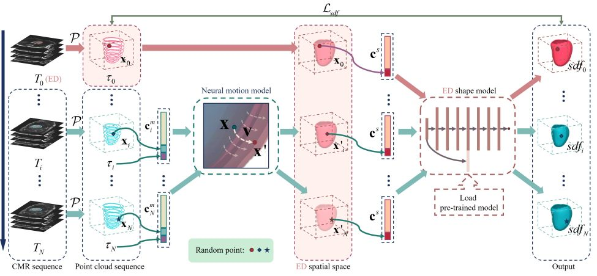
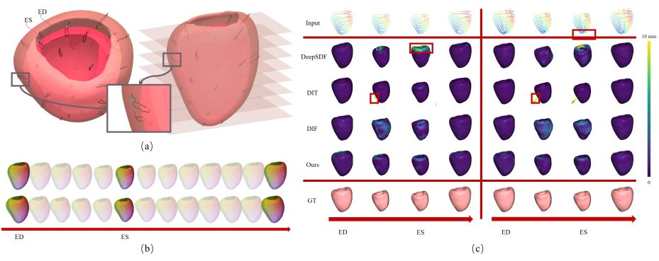
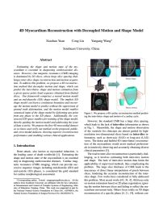

IEEE/CVF International Conference on Computer Vision (ICCV), 2023
4D Myocardium Reconstruction with Decoupled Motion and Shape Model

Method Overview.
The point cloud sequence is first segmented from the input CMR sequence. We register the point cloud at the ED phase to the pre-defined statistical mean shape in the ED spatial space and broadcast the obtained transformation to all phases. For any query point at Ti phase, the neural motion model takes its coordinate and phase indicator as input and predicts the point’s deformation to the ED spatial space under the condition of motion code. The pre-trained implicit ED shape model estimates the SDF value of the deformed point under the condition of shape code. Finally, the shape reconstruction is completed by extracting the boundary. Abstract
Estimating the shape and motion state of the myocardium is essential in diagnosing cardiovascular diseases. However, cine magnetic resonance (CMR) imaging is dominated by 2D slices, whose large slice spacing challenges inter-slice shape reconstruction and motion acquisition. To address this problem, we propose a 4D reconstruction method that decouples motion and shape, which can predict the
inter-/intra-
shape and motion estimation from a given sparse point cloud sequence obtained from limited slices. Our framework comprises a neural motion model and an end-diastolic (ED) shape model. The implicit ED shape model can learn a continuous boundary and encourage the motion model to predict without the supervision of ground truth deformation, and the motion model enables canonical input of the shape model by deforming any point from any phase to the ED phase. Additionally, the constructed ED-space
enables pre-training of the shape model, thereby guiding the motion model and addressing the issue of data scarcity. We propose the first 4D myocardial dataset (4DM Dataset
) as we know and verify our method on the proposed, public, and cross-modal datasets, showing superior reconstruction performance and enabling various clinical applications.Code and Dataset
Here, we release the source code and dataset.
The rights to copy, distribute, and use the code and dataset are being given access to are under the control of Yangang Wang, director of the Vision and Cognition Lab, Southeast University. In this case, credit must be given to: *4D Myocardium Reconstruction with Decoupled Motion and Shape Model*.
Any commercial use is not allowed
. I am very glad to receive your feedbacks about this code and dataset.
The dataset consisting of 25 healthy subjects obtained from Jiangsu Province Hospital. Each subject includes multiple slices (8-10 slices) with a resolution of 1.25 × 1.25 × 10mm. Each slice covers the video sequence of the cardiac cycle (25 phases). The clinical experts manually delineated the left myocardium of all the phases and slices.
Results

(a) Presentation of dense motion estimation. Some sample points are highlighted. (b) The motion track of some surface points (black curve), one of which is zoomed in. The shapes of the ED phase and ES phase are visualized. (c) 4D reconstruction results of cardiac cycle based on implicit methods.
Materials
|

Related links
|
|
Reference
Xiaohan Yuan, Cong Liu and Yangang Wang. "4D Myocardium Reconstruction with Decoupled Motion and Shape Model". IEEE/CVF International Conference on Computer Vision (ICCV), 2023.
Acknowledgments: This work was supported in part by the National Natural Science Foundation of China (No. 62076061), the Natural Science Foundation of Jiangsu Province (No. BK20220127).
- © 2019 Dr. Yangang Wang. All Rights Reserved.